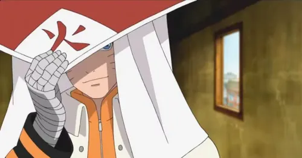

Atividade Prática - Currículo na Web
Identificação -
Apresentação -
Formação Acadêmica -
Experiência Profissional

Identificação
- Naruto Uzumaki
- naruto.uzumaki@konoha.gov
- (47) 99999-0007
- Rua da Folha, 7 - Vila Oculta - Konoha - JP
Apresentação
Um ninja determinado, com forte capacidade de liderança e resiliência e que sonhava sem se tornar Hokage. Superou
diversas adversidades ao longo da vida, desenvolvendo habilidades excepcionais em trabalho em equipe,
criatividade sob pressão e comunicação
interpessoal.
Apaixonado por ramen e por nunca desistir dos seus objetivos. Após anos
de treinamento, batalhas épicas e a conquista da paz entre as nações ninja durante a Quarta Grande Guerra Ninja,
Naruto cumpriu sua promessa e se tornou o Sétimo Hokage, o mais poderoso e amado líder que Konoha já teve.
- Academia Ninja – Escola da Aldeia da Folha
- Treinamento Avançado em Senjutsu – Monte Myōboku
- Técnicas de Modo Sábio – Jiraiya Sensei
Experiência Profissional
- Esquadrão 7 – Konoha
- Execução de missões de alto risco
- Trabalho em equipe com Sasuke e Sakura
- Hokage – Aldeia Oculta da Folha
- Gestão e liderança da aldeia
- Tomada de decisões estratégicas